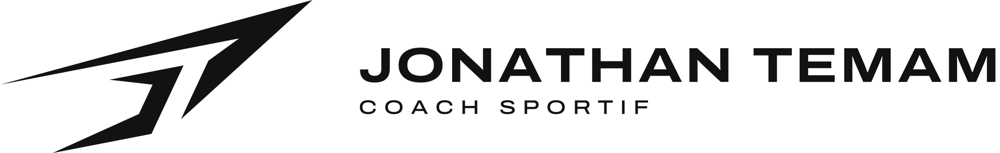
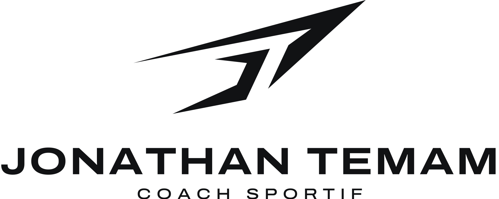
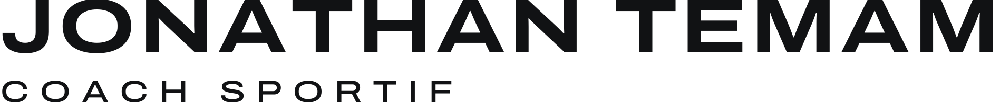
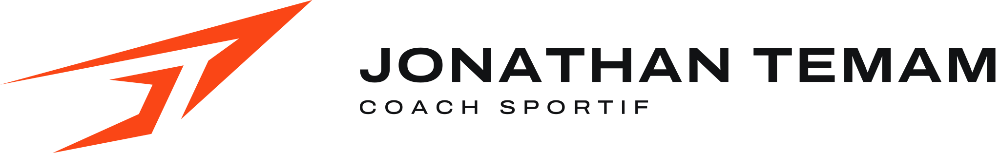

La discipline
bat la
motivation.
bat la
motivation.

Ce document rassemble les règles qui font vivre l'identité visuelle de Jonathan Temam, coach sportif. Il s'adresse à toutes les personnes qui produisent un support pour la marque : Jonathan lui-même, graphistes, imprimeurs, brodeurs, développeurs web, partenaires et salles.
Une marque forte ne naît pas d'un logo seul, mais de la répétition cohérente des mêmes signes : un symbole, deux couleurs fortes, deux typographies, un angle. Chaque post, chaque t-shirt, chaque carte de visite construit la même image — et la rend plus reconnaissable que la précédente.
Les règles sont pensées pour être simples à appliquer, y compris dans Canva. En cas de doute, privilégiez toujours la version la plus sobre : noir, blanc, et beaucoup d'espace.
Ce que la marque défend, et la manière dont elle s'exprime.
Amener chaque personne accompagnée au-delà de ce qu'elle pensait possible — avec méthode, exigence et bienveillance.
Faire du sport un réflexe durable, pas une résolution de janvier. Un coaching qui transforme le corps et les habitudes.
Un cap clair, un suivi précis, des progrès mesurables à chaque étape.
Trois mots qui prolongent le symbole : une trajectoire qui monte. Elle s'emploie en fin de message, en accroche de campagne ou sous le logo dans les grands formats — jamais modifiée, jamais traduite.
Particuliers actifs de 25 à 55 ans (remise en forme, perte de poids, force) · sportifs amateurs préparant un objectif · entreprises et petits groupes.
Coaching individuel · small group training · préparation physique · programmes et suivi à distance.
Premium mais accessible : l'exigence d'un préparateur physique, la proximité d'un coach personnel.
Elles guident les décisions — du choix d'une photo à la manière de répondre à un message.
Chaque séance a un objectif. Chaque exercice a une raison. Le travail bien fait, sans raccourci.
On mesure, on ajuste, on avance. Le progrès se voit, se chiffre et se célèbre.
Présent, ponctuel, impliqué. Le coach s'engage autant que la personne accompagnée.
Écouter avant de prescrire. Un accompagnement humain, adapté à la vie réelle de chacun.
| La marque est… | …mais n'est pas |
|---|---|
| Directe | Brutale |
| Motivante | Culpabilisante |
| Exigeante | Élitiste |
| Énergique | Agitée ou criarde |
| Experte | Jargonneuse |
« 4 semaines de travail, +20 kg au squat. Fier de toi, Karim. Prochaine étape : 100 kg. »
« Séance de demain décalée à 18 h. On garde le même programme, prévois de l'eau. »
« Nous proposons un programme de 8 semaines pour vos équipes, adapté à tous les niveaux. »
Le symbole, ses versions et les règles qui le protègent.
Les initiales J et T sont dessinées comme deux lames qui s'élancent vers le haut à droite. Le symbole se lit d'un coup d'œil : un nom, une direction, une énergie.
La longue barre et la lame descendante forment le T de Temam — une lettre devenue trajectoire.
Le J de Jonathan s'emboîte sous le T, en contre-forme : deux initiales, un seul geste.
L'ensemble monte à 15° et pointe vers l'avant : la progression, la vitesse, l'objectif.
Le symbole est construit uniquement en lignes droites, sur quatre angles qui se répondent. Ce sont ces angles — et surtout le 15° — qui structurent tout le système graphique.
Formes pleines, sans courbe ni dégradé : le logo se découpe, se brode et se grave sans perte. Le symbole ne doit jamais être redessiné — utilisez toujours les fichiers fournis.
Quatre versions pour s'adapter à chaque format. Le symbole et le nom gardent toujours les mêmes proportions entre eux.



Le logotype est composé en Archivo Expanded Bold et vectorisé. Ne jamais le retaper au clavier.
X = un quart de la hauteur du symbole. Aucun texte, image ou bord de page ne doit entrer dans cette zone. Elle grandit et rétrécit avec le logo : c'est une proportion, jamais une distance fixe.
| Version | Écran | Impression |
|---|---|---|
| Horizontal | 140 px de large | 35 mm |
| Vertical | 90 px de large | 22 mm |
| Logotype | 110 px de large | 28 mm |
| Symbole | 32 px de large | 8 mm |
| Symbole petite taille | 16 – 31 px | 4 – 8 mm · broderie |
Sous 32 px, utilisez le fichier jt-symbole-petite-taille : pointes raccourcies et
épaissies pour rester lisibles (favicon, petites broderies).
Le logo vit d'abord en noir et blanc. L'Orange Impulsion est réservé au symbole, pour signer avec force.



Le blanc sur Orange est déconseillé pour le nom (contraste 3,5:1) : réservez-le au symbole seul en grand format.
Sur une photo, le logo se place toujours sur une zone calme et contrastée. Si aucune zone ne convient, utilisez le cartouche.
Le logo est un fichier, pas un dessin à refaire. Toute modification, même légère, affaiblit la reconnaissance.
Une palette courte et contrastée : du noir pour l'exigence, de l'orange pour l'élan.
RVB/HEX pour les écrans · CMJN pour l'impression quadri · Pantone pour les tons directs, le textile et la signalétique. Les références Pantone sont les plus proches : validez-les sur nuancier imprimé avant toute production.
Le noir et la craie portent la marque ; l'orange ponctue. Trop d'orange, et il ne signale plus rien.
Ratios calculés selon WCAG 2.1. L'orange n'est jamais utilisé pour du texte courant sur fond clair : réservez-le aux titres, chiffres clés, boutons sur fond noir et au symbole.
Deux familles libres de droits : une pour frapper, une pour expliquer.
Titres, accroches, chiffres clés. Large, solide, toujours en capitales. C'est la police du logotype.
Inter — textes courants, interfaces, légendes. Regular 400, Medium 500, SemiBold 600.
Licence SIL OFL · Google Fonts.
Polices de secours : Arial / Helvetica.
Des outils dérivés du symbole pour reconnaître la marque, même sans logo.
Deux signatures issues du symbole. L'angle de son arête supérieure découpe les images et les aplats ; sa pointe effilée devient un trait de soulignement.
Des lames effilées en quinconce, comme une trace de vitesse. Il habille les fonds, les dos de cartes, le textile et les publications sans texte.
Le motif ne se combine jamais avec le logo dans la même zone : laissez toujours au logo sa zone de protection sur un aplat.
Un jeu de pictogrammes linéaires, angles vifs et extrémités carrées, pour présenter l'offre et rythmer les supports.
Les photos montrent l'effort réel, pas la pose. Lumière franche, contraste marqué, mouvement dans le cadre.
Le système en situation : ce que les gens verront, toucheront et porteront.
Carte de visite 85 × 55 mm — recto Noir Carbone, verso Blanc Craie · papier 350 g non couché.
Le textile est le premier support de visibilité d'un coach : il doit se reconnaître de loin, à l'entraînement comme en dehors.
Coaching individuel, small group et préparation physique. Un plan clair, un suivi chaque semaine.
Réserver mon bilan offertBoutons Orange Impulsion avec texte Noir Carbone · fond de site Noir Carbone · favicon et icônes d'application fournis (dossier logo/web). *Chiffres d'illustration.
Pour les vidéos, reels et l'ouverture du site. 1,6 seconde, du trait à la signature.
Le bon fichier, au bon endroit.
jonathan-temam/
├─ Jonathan-Temam_Charte-graphique.pdf
├─ logo/
│ ├─ svg/ masters vectoriels
│ │ ├─ jt-horizontal-{noir|blanc|accent-clair|accent-sombre}.svg
│ │ ├─ jt-vertical-{…}.svg
│ │ ├─ jt-logotype-{…}.svg
│ │ ├─ jt-symbole-{noir|blanc|orange|…}.svg
│ │ ├─ jt-symbole-petite-taille.svg
│ │ └─ jt-avatar-{noir|orange}.svg
│ ├─ png/ mêmes fichiers, fond transparent
│ └─ web/ favicon.ico, favicon.svg, icônes
│ 192/512, apple-touch, webmanifest
├─ presentation/ planche de présentation
└─ source/ polices (OFL), scripts de génération
| Usage | Format |
|---|---|
| Site, réseaux, Canva, présentations | SVG ou PNG |
| Imprimeur, sérigraphie, broderie | SVG (vectoriel) + codes CMJN / Pantone |
| Photo de profil | jt-avatar-noir.png |
| Navigateur, smartphone | dossier web/ |
| Fond sombre | versions « blanc » ou « accent-sombre » |
jt-[version]-[couleur].[format] — ex. jt-vertical-blanc.png.
Les PNG sont exportés à 2400 px de large ; pour une impression grand format, utilisez toujours le SVG.
